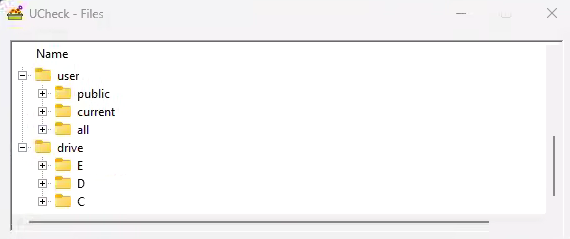

Page 1 of 1
Box content display order
Posted: Fri Jan 26, 2024 10:57 pm
by phishmiser
When I browse the box content, one of my PC displays the content in reverse alphabetical order, and clicking on the header does not toggle this to alphabetical. After slogging through the menus, I admit defeat on what is likely a very basic oversight. I welcome any help.

Re: Box content display order
Posted: Sat Jan 27, 2024 8:08 am
by bastik-1001
If you are missing something, so do I. I have to admit that I don't use that function, but I remember seeing it being sorted the other way around. My memory might betray me, but I thought that it was possible to click the header to sort, not only from A-Z or Z-A, but also the type and size.
Re: Box content display order
Posted: Sat Jan 27, 2024 8:24 am
by bastik-1001
I created an
issue for that, since I see the reversed order and think that users find it better if the default is A-Z and even better if they can sort by any column.